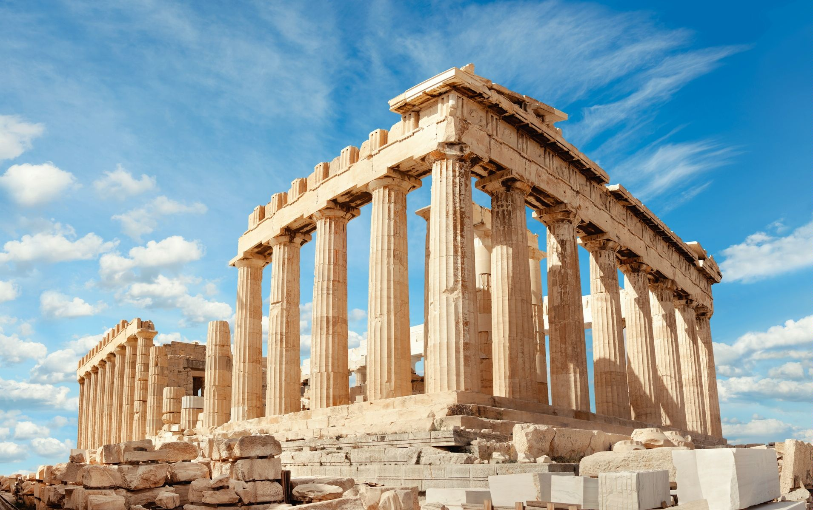
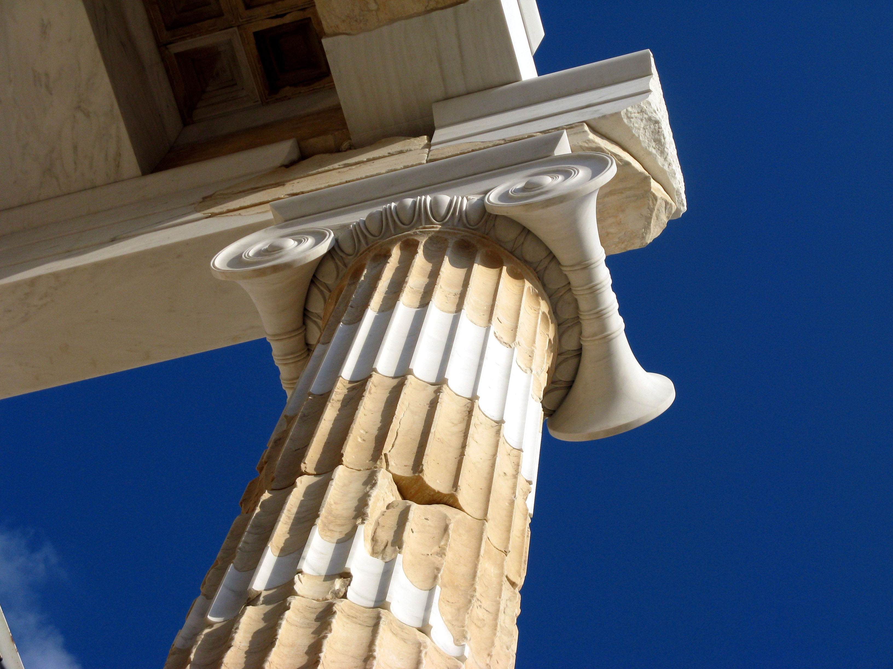

Афинский акрополь
Афи́нский Акро́поль — акрополь в городе Афины, представляющий собой 156-метровый скалистый холм с пологой вершиной (ок. 300 м в длину и 170 м в ширину). Это было главное место для нахождения царя. Также внутри имелось немало храмов, где возносились молитвы греческим богам и воздавались жертвы. По настоящее время Акрополь — выдающийся памятник архитектурного искусства.
Хотя есть свидетельства того, что холм был заселён ещё в четвёртом тысячелетии до н. э., наиболее важные сооружения на этом месте, включая Парфенон, Пропилеи, Эрехтейон и Храм Ники Аптерос, были построены в V веке до н. э. по инициативе Перикла. Парфенон и другие здания были серьёзно повреждены при осаде венецианцами в 1687 году, во время турецко-венецианской войны (1684—1699), когда порох, хранившийся в Парфеноне, был поражён пушечным ядром и взорвался.
История
Первые укрепления на скалистом отроге размером 300 м на 130 м, поднимающемся на окраине Афин, появились ещё задолго до наступления классического периода. Уже во времена архаики здесь располагались величественные храмы, скульптуры, различные предметы культа. Акрополь также называют «Кекропия» (Cecropia) или «Кекропс» (Kekrops) — в честь Кекропса, который по легенде был первым царём Афин и основателем Акрополя.
В микенский период (XV—XIII вв. до н. э.) Акрополь являлся укреплённой царской резиденцией. В VII—VI вв. до н. э. здесь велось большое строительство. При тиране Писистрате (560—527 гг. до н. э.) на месте царского дворца был построен храм богини Афины Гекатомпедон (то есть храм длиною в сто шагов; сохранились фрагменты скульптур фронтонов, выявлен фундамент). В 480 году до н. э. во время греко-персидских войн храмы Акрополя были разрушены персами. Жители Афин дали клятву восстановить святыни только после изгнания врагов из Эллады.
В 447 году до н. э. по инициативе Перикла на Акрополе началось новое строительство; руководство всеми работами было поручено знаменитому скульптору Фидию, который, видимо и явился автором проекта, лёгшего в основу всего комплекса, его архитектурного и скульптурного облика. Над созданием ансамбля Акрополя работали также зодчие Калликрат, Иктин, Мнесикл, Архилох и другие.
В V веке Парфенон стал церковью Богоматери, статуя Афины Парфенос была перевезена в Константинополь. После завоевания Греции турками (в XV веке) храм превратили в мечеть, к которой пристроили минареты, затем — в арсенал; Эрехтейон стал гаремом турецкого паши, храм Ники Аптерос был разобран, из его блоков сложена стена бастиона. В 1687 году после попадания ядра с венецианского корабля взрыв уничтожил почти всю центральную часть храма Афины — Девы, при неудачной попытке венецианцев снять скульптуры Парфенона несколько статуй были разбиты. В начале XIX века лорд Элджин выломал ряд метоп, десятки метров фриза и почти все сохранившиеся скульптуры фронтонов Парфенона, кариатиду — из портика Эрехтейона.
В 1827 году во время обороны Акрополя греческими повстанцами от турецкого пушечного ядра сильно пострадал храм Эрехтейон. Предыдущие попытки турок взорвать Акрополь с помощью подкопов сорвал греческий сапёр Костас Хормовитис, имя которого дано одной из центральных улиц.
После провозглашения независимости Греции в ходе реставрационных работ (в основном в конце XIX века) по возможности был восстановлен древний облик Акрополя: ликвидирована вся поздняя застройка на его территории, заново выложен храм Ники Аптерос и т. п. Рельефы и скульптуры храмов Акрополя находятся в Британском музее (Лондон), в Лувре (Париж) и Музее Акрополя. Остававшиеся под открытым небом скульптуры сейчас заменены копиями.
План Местности
- Парфенон.
- Гекатомпедон.
- Эрехтейон.
- Статуя Афины Промахос.
- Пропилеи.
- Храм Ники Аптерос.
- Элевсинион.
- Бравронейон.
- Халькотека.
- Пандросейон.
- Аррефорион.
- Афинский алтарь.
- Святилище Зевса Полиея.
- Святилище Пандиона.
- Одеон Герода Аттического.
- Стоя Эвмена.
- Асклепион.
- Театр Диониса.
- Одеон Перикла.
- Теменос Диониса.
- Святилище Аглавры.
Галерея

Вход в Акрополь
Отреставрированная колонна
Примечания
- Hurwit 2000, p. 87
- «History», Odysseus. Retrieved 2 December 2012.
- Nicholas Reeves and Dyfri Williams, «The Parthenon in Ruins» Архивировано 6 августа 2009 года., British Museum Magazine 57 (spring/summer 2007), pp. 36-38. Retrieved 2 December 2012.
- Афинский Акрополь Архивировано 23 апреля 2012 года., архитектура и ансамбль Афинского Акрополя.
- Бартенев И. А., Батажкова В. Н. Очерки истории архитектурных стилей. — М.: Изобразительное искусство, 1983. — С. 31. — 264 с.
Литература
на русском языке
- Афинский Акрополь / Таруашвили Л. И. // Анкилоз — Банка [Электронный ресурс]. — 2005. — С. 517. — (Большая российская энциклопедия : [в 35 т.] / гл. ред. Ю. С. Осипов ; 2004—2017, т. 2). — ISBN 5-85270-330-3.
- Афинский Акрополь, 1975—1983. Научные исследования, поиски, реставрации. Музей Пушкина, 26 июня — 26 июля 1985 г. / Министерство культуры и наук Греции, Комитет по охране памятников Акрополя. — Афины: Казна археологических ресурсов и экспроприаций, [1985]. — 87 с.
- Брунов Н. И. Памятники Афинского Акрополя. Парфенон и Эрехтейон. — М.: Искусство, 1973. — 170 с.
на других языках
- Brouskarje M. Mouseion Akropolejos. Athens, 1974;
- Dontas G. The Acropolis and its museum. Athеns, 1994
- Payne H. Archaic marble sculpture from the Acropolis. 2nd ed. L., 1950
- Raubitschek A. E. Dedications from the Athenian Akropolis. Chi., 1999.
- Wiegand T. Die archaische Poros-architektur der Akropolis zu Athen. Cassel, 1904